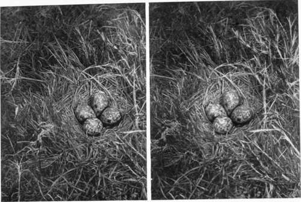

Chapter V. The Dark Room Developing And Printing
Description
This section is from the book "Nature Photography For Beginners", by E. J. Bedford. Also available from Amazon: Nature Photography for Beginners.
Chapter V. The Dark Room Developing And Printing
The photographer who is able to devote to his own exclusive use a room for developing his exposures and for other photographic purposes should consider himself fortunate. Many of my readers may not find themselves able to do this, for various reasons, and I will, therefore, give a few hints to help them in making the best of a room which can only be used for the purpose temporarily.
Often a satisfactory arrangement can be made with the powers that be in the house to use the bath-room, or failing that the kitchen or scullery sink, and either of these can be adapted to answer very well, and may even have certain advantages attached to their use, as the dishes and other paraphernalia used for developing, etc., will have to be washed and removed each time, at the conclusion of the operations. This will tend to encourage one very important point, namely, cleanliness. In any case a room with a supply of water laid on and a waste pipe will prove very convenient, although not absolutely necessary. If a room cannot be used which has water laid on, then the provision of it by a can and a pail or two for the waste will answer very well, a small wooden table being used to place the dishes, etc., on, the pails for the waste being placed under the table, where they can be safely kept and easily found in the necessary dim light. Nowadays, the process of development can be very much simplified by carrying it out in one of the light-tight developing tanks on the market at the present time, and if this be carefully done, perhaps more uniform results can be obtained in this way than by any other method.
Fig. 16. Lapwings Nest.
An absolutely darkened room—except for the light of the dark room lamp—will be necessary at times, and we must either postpone our operations until the evening or block out, by some means, the light entering the room. If the room is lighted by one window it is comparatively easy to make a frame covered with two thicknesses of brown paper or other opaque material, and large enough to cover the window completely, so that every ray of light is excluded, except that which comes from the dark room lamp within. Another method would be to have a pair of opaque curtains rather larger than the window, and so fixed that they can be quickly drawn across to shut out all the white light. But as full particulars of the best way of arranging a dark room will be found in any one of the text-books already advised for the beginner, it is unnecessary to enter into full details here.
I should, however, recommend that development, if carried out in the usual dishes, should be performed by means of artificial light. This latter is more constant than daylight filtered through red glass or medium. With a light which does not vary in intensity it is easier to judge the density of the negative, a task which is always more or less difficult in the dim light of the dark room. When Orthochromatic plates are being dealt with, it is especially necessary to be careful, not only regarding the quantity, but also the quality, of the light used for development. Now that it is possible to obtain these colour corrected plates of a high speed they should always be used, as they are superior to ordinary plates in rendering tone and colour values either with or without a screen or filter.
As nothing has yet been said about the choice of a plate, this will be a convenient place to do so. There is " no possible doubt whatever " that any brand of plates upon the market will give good results with suitable treatment, and the only general advice that need be given is, when a plate is found which gives good results, stick to it. At the same time, the beginner has to first find out what kind of plate will be likely to suit him, and I will therefore recommend two brands which I have used largely with very satisfactory results. One is the " Barnet Ortho Extra Rapid." This is an excellent clean-working plate, which allows great latitude in exposure. It is fast enough for the majority of work likely to be attempted by the beginner, and has given very good results in my hands without the use of a yellow screen or filter. As an all round plate, I feel certain it would prove easily workable in the hands of the beginner, and an exposure card contained in each box of plates considerably helps to lessen the chances of error in exposure. (Do not, however, omit to use the exposure meter already recommended).
Another plate I have found very good indeed, and rather more rapid than the " Barnet," is Marion's " Iso Instantaneous." This also gives excellent colour renderings without a screen, but being very sensitive, care must be exercised to guard against the possibility of fogging it in the dark room. If a plate is fogged during the process of development it is impossible to obtain either sufficient detail or density in a reasonable time, and the plate-maker may be blamed when the fault is really due to the photographer. Backed plates are recommended by most experienced workers as giving the best results, and if they are not used exclusively, a sufficient number should be carried in addition to the unbacked ones to enable the former to be used on any difficult subjects likely to give halation. A backed plate will also give more latitude than an unbacked one in case of over-exposure. In develop-ing backed plates no notice should be taken of the backing until the image is well up on the plate. The developer, by this time, will have sufficiently softened the backing to allow it to be easily wiped off with a sponge, the plate being well rinsed on both sides under the tap before replacing in the developer. Unless the backing is removed it will be impossible to judge the density of the negative by looking through it. A trial packet of either of the above-mentioned brands of plates—or, for the matter of that, any other brand—will enable the worker to decide on the one likely to suit him best.
Continue to:
Tags
nature, photography, art, birds, camera